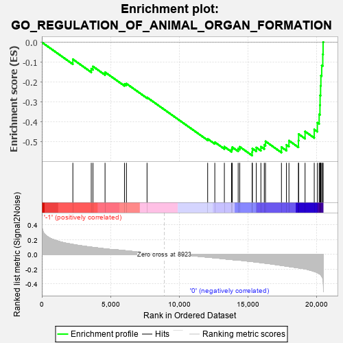

| | | Dataset | GSEAExpression.phenotype_uvm.cls#-1_versus_0 |
| Phenotype | phenotype_uvm.cls#-1_versus_0 |
| Upregulated in class | 0 |
| GeneSet | GO_REGULATION_OF_ANIMAL_ORGAN_FORMATION |
| Enrichment Score (ES) | -0.5698889 |
| Normalized Enrichment Score (NES) | -1.665615 |
| Nominal p-value | 0.02892562 |
| FDR q-value | 1.0 |
| FWER p-Value | 0.987 |
Table: GSEA Results Summary

Fig 1: Enrichment plot: GO_REGULATION_OF_ANIMAL_ORGAN_FORMATION
Profile of the Running ES Score & Positions of GeneSet Members on the Rank Ordered List
| PROBE | DESCRIPTION
(from dataset) | GENE SYMBOL | GENE_TITLE | RANK IN GENE LIST | RANK METRIC SCORE | RUNNING ES | CORE ENRICHMENT | | 1 | NOTCH1 | na | | | 2260 | 0.135 | -0.0855 | No |
| 2 | FRS2 | na | | | 3601 | 0.098 | -0.1329 | No |
| 3 | WNT3A | na | | | 3725 | 0.095 | -0.1215 | No |
| 4 | CITED2 | na | | | 4605 | 0.076 | -0.1505 | No |
| 5 | FGFR1 | na | | | 6021 | 0.051 | -0.2101 | No |
| 6 | BMP2 | na | | | 6164 | 0.049 | -0.2081 | No |
| 7 | HOXC11 | na | | | 7665 | 0.022 | -0.2773 | No |
| 8 | MKS1 | na | | | 12082 | -0.038 | -0.4860 | No |
| 9 | AR | na | | | 12603 | -0.047 | -0.5028 | No |
| 10 | GDNF | na | | | 13299 | -0.060 | -0.5256 | No |
| 11 | WNT2B | na | | | 13824 | -0.070 | -0.5384 | No |
| 12 | FGF8 | na | | | 13874 | -0.071 | -0.5278 | No |
| 13 | ROBO1 | na | | | 14307 | -0.076 | -0.5348 | No |
| 14 | WNT5A | na | | | 14422 | -0.079 | -0.5260 | No |
| 15 | PIM1 | na | | | 15323 | -0.098 | -0.5519 | Yes |
| 16 | CTNNB1 | na | | | 15340 | -0.098 | -0.5347 | Yes |
| 17 | SHH | na | | | 15626 | -0.104 | -0.5296 | Yes |
| 18 | SPRY1 | na | | | 15961 | -0.111 | -0.5255 | Yes |
| 19 | ROBO2 | na | | | 16207 | -0.117 | -0.5159 | Yes |
| 20 | HOXA11 | na | | | 16296 | -0.119 | -0.4983 | Yes |
| 21 | MESP1 | na | | | 17459 | -0.149 | -0.5277 | Yes |
| 22 | TBX5 | na | | | 17823 | -0.159 | -0.5162 | Yes |
| 23 | DKK1 | na | | | 18006 | -0.164 | -0.4949 | Yes |
| 24 | SIX1 | na | | | 18697 | -0.183 | -0.4950 | Yes |
| 25 | ISL1 | na | | | 18712 | -0.183 | -0.4620 | Yes |
| 26 | HAND2 | na | | | 19180 | -0.197 | -0.4487 | Yes |
| 27 | GATA5 | na | | | 19848 | -0.231 | -0.4389 | Yes |
| 28 | FGF10 | na | | | 20075 | -0.247 | -0.4046 | Yes |
| 29 | FGF1 | na | | | 20207 | -0.262 | -0.3630 | Yes |
| 30 | SULF1 | na | | | 20265 | -0.268 | -0.3165 | Yes |
| 31 | BMP7 | na | | | 20275 | -0.270 | -0.2674 | Yes |
| 32 | HES1 | na | | | 20311 | -0.276 | -0.2184 | Yes |
| 33 | BMP4 | na | | | 20333 | -0.282 | -0.1677 | Yes |
| 34 | WT1 | na | | | 20392 | -0.296 | -0.1163 | Yes |
| 35 | WNT2 | na | | | 20470 | -0.323 | -0.0607 | Yes |
| 36 | EYA1 | na | | | 20493 | -0.343 | 0.0012 | Yes |
Table: GSEA details [plain text format]
Fig 2: GO_REGULATION_OF_ANIMAL_ORGAN_FORMATION
Blue-Pink O' Gram in the Space of the Analyzed GeneSet
Fig 3: GO_REGULATION_OF_ANIMAL_ORGAN_FORMATION: Random ES distribution
Gene set null distribution of ES for GO_REGULATION_OF_ANIMAL_ORGAN_FORMATION